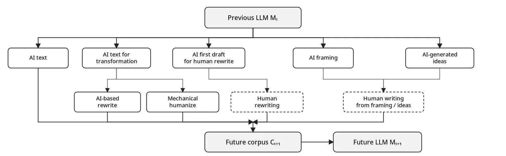

A potential blind spot in using AI provenance to prevent model collapse
One of the uncomfortable discoveries in the world of generative AI is that if you train successive generations of AI models on AI-generated text, it can lead to model collapse. That is, model performance drops rather than increases with the incorporation of that new data. But models do require new data, not just because of scaling requirements, but also because it is the only way to make sure that model performance does not degrade and keeps up with changes in the use of words and language, new computer languages, new discoveries, and new concepts.
To allow for model updates while mitigating the risk of collapse, Drayson et al. suggest using machine-generated-text detection as a way to increase the ratio of human- to AI-generated text incorporated into the training data.
But this mitigation is now itself at risk, as there is increasing economic value in hiding the provenance of text. Use of Pangram-based detection, AI-slop reporting on LinkedIn, and the generally strong—and frequently deserved—negative connotation of using AI to generate writing provide an incentive to conceal its origin. In response, a cottage industry is springing up to allow people to “humanize” AI-produced text to hide its provenance. Several methods exist, from AI paraphrasing that can weaken SynthID watermarks, to prompting to remove “AI smells,” to human rewrites of an AI draft.
This adversarial “washing” of AI-generated content creates a risk of text that evades detection while still contaminating the training of future AI models. Even if rewriting removes distinct token-probability patterns or other detectable characteristics, that does not mean the content is now independent of AI. Sourati, Ziabari and Dehghani make this concern explicit in Trends in Cognitive Sciences. They synthesize evidence that widespread LLM use can homogenize human language, perspectives, and reasoning as people increasingly rely on the same models across contexts.

And as AI-generated content becomes cheaper and more common, it becomes harder to keep it out of training data without also throwing away more human writing. To keep the amount of AI-generated text low after filtering, detectors have to become more aggressive—accepting more false positives and rejecting more genuinely human-written content as collateral damage.
This purely human-driven incentive, external to the AI itself, means that it will become increasingly difficult to understand how much information entered the training corpus that is independent of previous generations of models—and therefore increasingly difficult to prevent future model collapse.
References
Shumailov, I., Shumaylov, Z., Zhao, Y., et al. (2024). “AI models collapse when trained on recursively generated data.” Nature, 631(8022), 755–759. https://doi.org/10.1038/s41586-024-07566-y
Drayson, G., Yilmaz, E., & Lampos, V. (2025). “Machine-generated text detection prevents language model collapse.” In Proceedings of the 2025 Conference on Empirical Methods in Natural Language Processing, 29657–29673. Suzhou, China: Association for Computational Linguistics. https://doi.org/10.18653/v1/2025.emnlp-main.1506
Dathathri, S., See, A., Ghaisas, S., et al. (2024). “Scalable watermarking for identifying large language model outputs.” Nature, 634(8035), 818–823. https://doi.org/10.1038/s41586-024-08025-4
Sourati, Z., Ziabari, A. S., & Dehghani, M. (2026). “The homogenizing effect of large language models on human expression and thought.” Trends in Cognitive Sciences, 30(9), 805–816. https://doi.org/10.1016/j.tics.2026.01.003
Ironic disclosure: AI was used to lightly edit this writing and generate the top image.